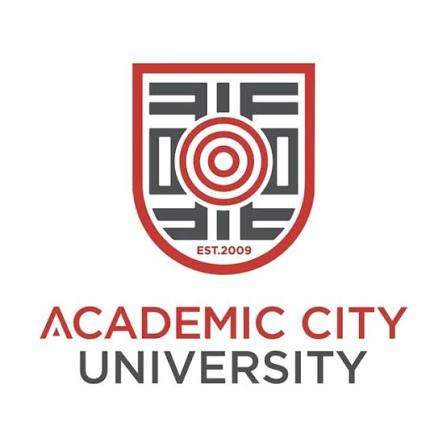

Report an Item
Lost something or found a belonging on campus? Submit a report to help reconnect items with their owners.
Report Items
Helping Academic City University students report lost belongings, find recovered items, verify ownership, and safely reconnect people with their property.
Our platform makes it easier to find missing belongings and help other students recover their property.
Lost something or found a belonging on campus? Submit a report to help reconnect items with their owners.
Report ItemsCheck reported belongings to see whether someone has found the item you are missing.
Browse ItemsReview item details and use the campus collection information to help recover your belongings safely.
View Collection PointsTogether, we can build a responsible campus community by helping lost belongings find their owners.
Found an item that belongs to someone else? Report it and help reunite a student with their belongings.
Report Items